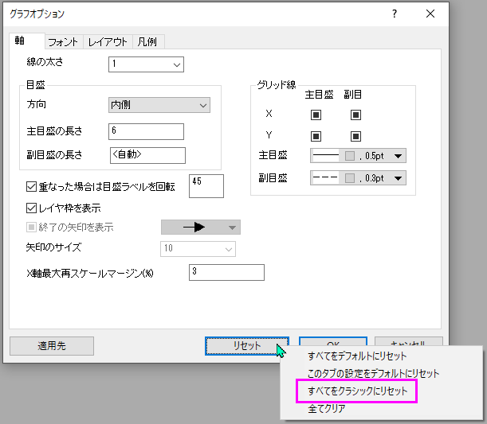
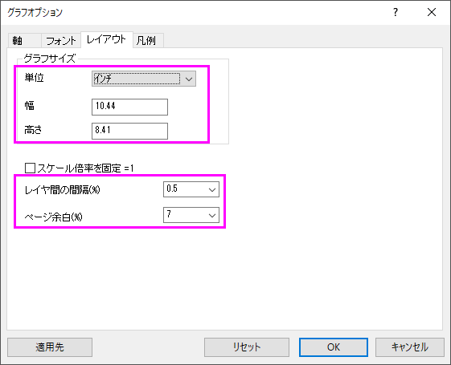

FAQ-1219 Origin 2025bでグラフが以前のバージョンと大きく異なるのはなぜですか。元に戻す方法は？
why-graph-looks-different-in-2025b
最終更新日：2025/8/5
Origin 2025bでグラフが以前のバージョンと異なって見えるのは以下のような変更が原因です。
-
- グラフページが広くなった（アスペクト比が変更された）
- グラフ周りの余白が小さくなった
- 軸タイトル、目盛ラベルなどのフォントサイズが異なる
- 軸の周囲にレイヤフレームが表示されるようになった
- 軸線の太さが変更された
- 目盛ラベルが重なる場合は自動で45°回転するようになった
- ...その他
また、グラフシステムテーマを設定したにもかかわらず、新しいグラフにテーマが適用されていない場合もあります。
これは、Origin 2025bで新しいグラフオプションダイアログが導入され、グラフのグローバル設定をより細かく制御できるようになったためです。これに伴い、新しいデフォルト値のセット定義され、以前のバージョンとは異なっています。
以前のバージョンでのクラシックな外観に復元するには
- 環境設定:グラフオプションを開きます。
- リセットボタンをクリックします。
- フライアウトメニューからすべてをクラシックにリセットを選択します。これにより、Origin 2025のデフォルトに一致するよう主要なフォーマットオプションを元に戻すことができます。

Note:
- いくつかの組み込みグラフテンプレートも2025bで更新されています。クラシック設定に戻した後も、外観が古いバージョンと正確に一致しないこともありますが、非常に近い状態にはなります。
- もし希望する場合は、リセットボタンをクリックして全てクリアを選択することで、ほとんどの設定が自動で設定され、古いシステムテーマおよびグラフテンプレートによって決定されます。その後、各タブで自分の設定を定義できます。
- システム変数'@GGO'は、これらの設定によって影響を受けるテンプレートの種類を制御します。
- '0' = なし
- '1' = システムテンプレート
- '2' = ユーザテンプレート
- '4' = アプリテンプレート
- '8' = 拡張テンプレート
これらの値は組み合わせることができます（例: '3' = システムテンプレート + ユーザテンプレート）。
レイアウト（ページサイズと余白）のみを元に戻すには
新しいデフォルトの大部分はそのままの設定で、グラフのレイアウトだけを調整したい場合、グラフオプションダイアログのレイアウトタブで、次の値を適用します。

キーワード:旧バージョンスタイル, グラフサイズ比, マージン, 軸フレーム, 統計モード, デフォルトモード, デフォルトグラフページ, ページレイアウト